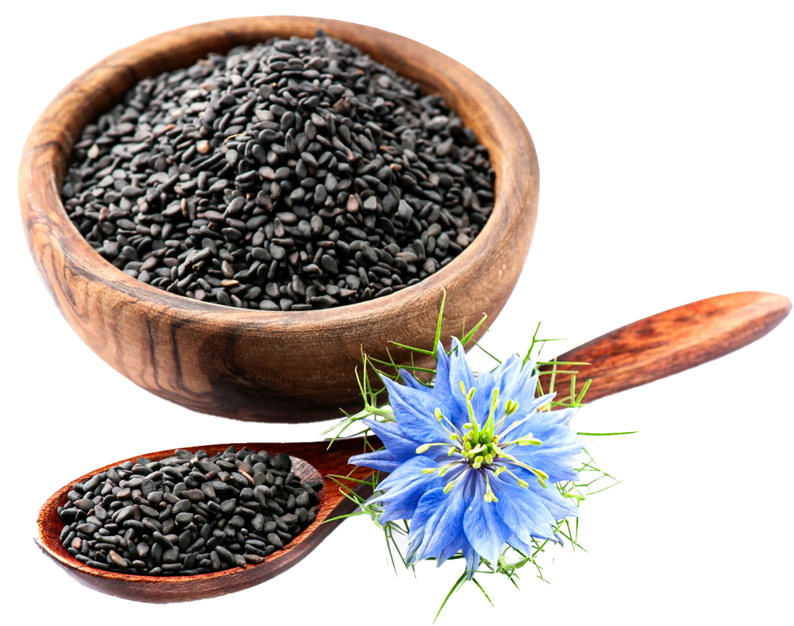
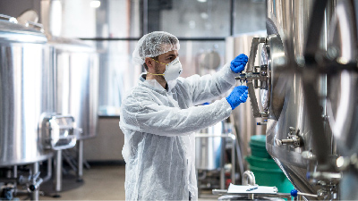
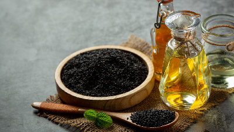

- 天雨理念
- 獨家技術
- 天雨團隊

這讓我們捫心自問——
我們能做些什麼呢？
我們該如何解決這個問題？
我們以種子的形式找到了答案。種子中含有我們身體所需的原始而有效的營養混合物，以優化我們身體的日常表現，讓我們享受生活中所有有益的經歷。
通過我們獲得專利的NatureFRESH Cold Press™ 程序，我們找到了一種提取能量種子的方法，並通過營養豐富、濃縮且方便的包裝發揮其功效。
我們希望與世界分享我們的產品，讓人們每天都感覺最好，這樣他們就可以專注於重要的事情。



無論您是一位想要花更多時間陪伴女兒的慈父，還是想要照顧父母健康的孩子，我們成立了AXXA Global來幫助您和您周圍的人，過著無憂無慮、健康豐富的生活。

Wellness made easy
Why Seeds?
為什麼選擇種籽？
種子含有發育成複雜植物所需的所有起始材料，因此它們的營養非常豐富。
它們含有：抗氧化劑、必需脂肪酸、維生素和礦物質。

提取方法 Extraction method
使用專利的 NatureFRESH™冷壓技術
一．油是在低於 100 攝氏度的缺氧環境下提取的，與使用熱量和化學物質的傳統方法相比，可生產出品質優良的油。
二. 過程中未添加任何物質，您得到的是強效、純正的種子油，估計 7 公斤漿果只能產出 1 茶匙的種子油。
The Journey of the Seed
-

1.來源和收到
種子來自我們合格的供應商，並在我們合規的環境控制設施中接收。
-

2.冷壓
種子流入壓榨室，壓力逐漸增加，將油從種子殼（粗粉）中分離出來。
-

3.種子粉/油
種子粉是由壓榨後的固體經去油處理和磨碎而成。種子油則是經過沉澱和過濾，去除微小顆粒而製成。
包裝好的 成品油和粉末儲存在氮氣層下以保持新鮮度，直到包裝和運輸。
-

創造完美的融合Creating the perfect blend
專利協同冷壓混合油(編號 7897194)一. 黑小茴香籽油和黑覆盆子籽油這兩種油的組合具有比單獨油的加權平均值的總和更高的抗氧化活性。
二. 為什麼？我們的研究表明，黑孜然籽油與其他植物油調合，釋放與過渡金屬的抗氧化鍵，並釋放更多的抗氧化劑。
三. 因此，我們的協同混合物具有增強的抗氧化作用 -

我們怎麼知道？How do we know?
氧自由基吸收能力（ORAC）6.0測試。由獨立第三方實驗室 Brunswick Laboratories 進行評估，以評估抗氧化劑對抗自由基的有效性。事實證明，我們的混合物具有最高的 ORAC 值之一，並將其納入我們的產品中。
-

尖端方法論Cutting-edge Methodology
我們將精心挑選的種子結合在一起，以最濃縮、最有效和最純淨的形式將它們交付給世界各地的消費者，不走任何捷徑。您無需返回源頭，因為我們正在將源頭帶給您。
*這些陳述未經食品藥品監督管理局評估。本產品不用於診斷、治療、治愈或預防任何疾病。

天雨團隊
Our team

Frankie Lee
Chairman
Frankie Lee 是 AXXA Global 的創始人兼董事長。結合了他對健康的熱情和商業頭腦，他決定創建一個平台，幫助其他人創造自己的未來。憑藉 30 多年的商業經驗，他帶領 AXXA Global 在全球範圍內擴張，傳播對種子營養的熱情。
Hsin Chong
Chief Executive Officer
具有經濟學背景的運動和營養狂熱者。我們的首席執行官 Hsin Chong 加入 AXXA Global 領導海外業務的發展，並提供對營養行業的重要見解。他的目標是揭示適當營養的世界，同時使人們能夠承擔起創造變革和做出改變的責任。

天雨顧問委員
Our Scientific Advisory Board
為了更好的未來而努力，以興趣結合社群來創業，發揮創玩精神，實現工作與自由平衡的生活。
-

DR.CHARLES MUSCOPLAT PH.D
Scientific Advisor
Charles Muscoplat是明尼蘇達大學食品與環境科學教授，同時擔任農業學院名譽院長藥物開發委員會主席。他是免疫學和微生物學博士，專注於腫瘤學、免疫學和傳染病領域，並已成功開發兩種商業藥物。他在學術和工業研發方面有豐富的經驗，並在促進食品科學、農業、健康和營養方面取得了國際聲譽。
-
MARK J. MUELLER
.Scientific Advisor
Mark Mueller於1999年創立了Botanic Innovations, LLC，專注於冷萃取的植物種子脂質和粉末的營養和健康屬性。他將商業經驗與植物學專業知識相結合，致力於探索種子油和粉末對人類健康的影響。Mueller還是「協同超強抗氧化劑冷壓植物油混合物」專利的發明者之一。
-
DR TODD MIRZAI, MD
Scientific Advisor
Todd Mirzai醫學博士是Botanic Innovations的董事會成員，該公司專注於生產營養豐富的冷壓種子油和麵粉，廣泛應用於功能性食品和化妝品市場。除了是整形外科醫生外，Mirzai博士還是私募股權公司的合夥人，並在健康科技領域擔任顧問和董事會成員。
-

DR NOAH JENKINS PH.D
Scientific Advisor
Noah Jenkins博士是Botanic Innovations的創新副總裁，擁有分子生物學博士學位。他專攻癌症研究，並在多家頂尖科學期刊上發表研究論文。Jenkins博士研究了小兒神經腫瘤學和小兒心臟病學，並開發了幾種有益於人類健康的小分子抑制劑。他熱衷於探索天然產品和植物營養素的正面效應，以及如何利用它們來增強健康。